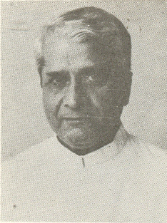

दिनेश सिंह

अहम मुद्दो:
वज़ारत ख़ारिजा, ज़ाबीना वजीर
१९६९ - १९७०, १९९३ - १९९५
सनाती तरक्की ۽ अंदरूनी वापार जी वज़ारत, ज़ाबीना वजीर
१९७० - १९७१
वापार जी वज़ारत, ज़ाबीना वजीर
१९६७ - १९६९, १९८८ - १९८९

4 जवाहर लाल नेहरू वज़ारत
वज़ारत ख़ारिजा
नायब वजीर
पहरेन गुलजार लाल निंदा वज़ारत
लाल बहादुर शास्त्री वज़ारत
2nd गुलजार लाल निंदा वज़ारत
पहरेन इंद्रा गांढी वज़ारत
राजीव गांढी वज़ारत
पी वी नरसीमा राओ वज़ारत
4 जवाहर लाल नेहरू वज़ारत

1_Upload_2924.pdf

जवाहर लाल नेहरू
o-Jawaharlal_Nehru.htmlवजीर आज़म
२ अप्रैल १९६२ - २७ मई १९६४
जवाहर लाल नेहरू
o-Jawaharlal_Nehru.htmlवजीर आज़म
१० अप्रैल १९६२ - २७ मई १९६४
दिनेश सिंह
o-Dinesh_Singh.htmlनायब वजीर
८ मई १९६२ - २७ मई १९६४
लायापील आरिअर
1_Upload_2924.pdf[46]८ मई १९६२वज़ीरन जी वाउंसल1_Upload_2930.pdf[8]८ मई १९६२वज़ीरन जी वाउंसल1_Upload_2925.pdf[47]८ जून १९६२वज़ीरन जी वाउंसल1_Upload_2926.pdf[47]२ नव॰ १९६२वज़ीरन जी वाउंसल1_Upload_2927.pdf[47]२१ नव॰ १९६२वज़ीरन जी वाउंसल1_Upload_2928.pdf[47]४ दिस॰ १९६२वज़ीरन जी वाउंसल1_Upload_2893.pdf[38]२ सित॰ १९६३वज़ीरन जी वाउंसल1_Upload_2894.pdf[40]२२ नव॰ १९६३वज़ीरन जी वाउंसल